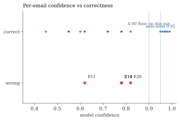
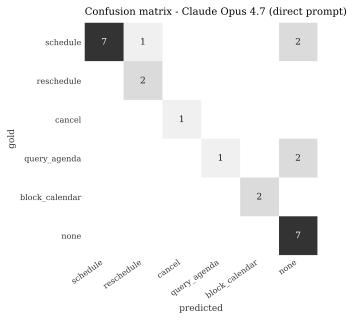
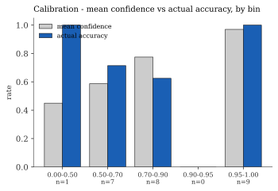
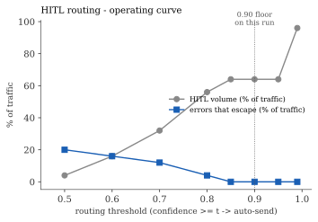

Results & Interpretation
The executable prototype's outputs on the 25-email dataset, and what the eval told us - in the order required by the brief: predictions on each email, scorer outputs in interpretable form, and a written interpretation of what the results say.
none - traced it to a prompt
that suppressed the model's reasoning, and a reasoning-first prompt A/B confirmed the
fix. Cross-checks across 5 independent runs corroborate that the failure
is model-general, not a same-model artefact.
Setup
- Primary model
- Claude Opus 4.7 . direct prompt
- Dataset
- 25 labelled emails (13 clean . 7 ambiguous . 5 misfit)
- Method
- zero-shot LLM call with label definitions in prompt; structured JSON output
- Tests
- 20 unit tests on the scorers, parsing, and taxonomy
1 - Every error is the same error: a real request dropped to none
After I scored honestly (ambiguous rows credited for either defensible label),
4 of 25 predictions are wrong - and all of
them are a genuine intent collapsed to none.
| ID | gold | predicted | conf | what it is |
|---|---|---|---|---|
| E11 | query_agenda | none | 0.62 | Third party asking whether a confirmed meeting still stands. query_agenda is def... |
| E14 | schedule | none | 0.78 | Deferral reply inside an active new-meeting negotiation. Intent is clearly sched... |
| E19 | query_agenda | none | 0.78 | Question about a meeting's format, not about calendar contents. query_agenda (ow... |
| E20 | schedule | none | 0.82 | Slot acceptance — the closing 'lock' step of a new-meeting negotiation (subject ... |
The pattern looked structural to me, not random. The model classifies the message body
in isolation - when the body carries no standalone explicit request, it defaults
to none, ignoring the context that does carry the intent. E14
("get back to you tomorrow") is a deferral inside an active scheduling thread; the
thread_so_far is right there in the input. E20 ("Locked in. See you
Wednesday.") has no thread provided; the intent lives in the subject line ("Re: lock
with reed - wed 3pm"). The shared failure: context blindness.

2 - Confusion matrix and per-class metrics

none - every error is a drop to it.| Label | Precision | Recall | F1 | Support |
|---|---|---|---|---|
schedule | 1.000 | 0.700 | 0.824 | 10 |
reschedule | 0.667 | 1.000 | 0.800 | 2 |
cancel | 1.000 | 1.000 | 1.000 | 1 |
query_agenda | 1.000 | 0.333 | 0.500 | 3 |
block_calendar | 1.000 | 1.000 | 1.000 | 2 |
none | 0.636 | 1.000 | 0.778 | 7 |
Classes with support < 5 are high-variance - read directionally only.
3 - none / out-of-scope detection
The two harms here are different. Low none recall = junk acted on
(newsletter handled as a real request). Low none precision = real request
dropped to none. In this run:
- The model never acted on junk (recall 1.0 - every newsletter, e-sign bot, social note classified correctly).
- But 4 real requests got dropped to
none, pulling precision to 0.636.
It errs conservative: drops real work rather than inventing work. For a scheduling agent, the silent drop is the failure that matters most - invisible, no error, no reply, the user's meeting never happens.
4 - Calibration

| Confidence bin | n | mean conf | accuracy |
|---|---|---|---|
| 0.00-0.50 | 1 | 0.45 | 1.00 |
| 0.50-0.70 | 7 | 0.59 | 0.71 |
| 0.70-0.90 | 8 | 0.78 | 0.62 |
| 0.90-0.95 | 0 | - | - |
| 0.95-1.00 | 9 | 0.97 | 1.00 |
_detect_intent prompt
before treating any specific threshold as production-ready.What I found encouraging is calibration on uncertainty: the confidence gap (mean conf on clean − mean conf on ambiguous) is 0.241; zero misfits were answered above 0.95; ambiguous acceptable-set hit rate is 7/7. The model is appropriately unsure where humans are unsure.
5 - HITL routing: the operating curve

| threshold | HITL volume | auto n | auto precision | escaped errors |
|---|---|---|---|---|
| 0.50 | 4% | 24 | 0.792 | 5 |
| 0.60 | 16% | 21 | 0.810 | 4 |
| 0.70 | 32% | 17 | 0.824 | 3 |
| 0.80 | 56% | 11 | 0.909 | 1 |
| 0.85 | 64% | 9 | 1.000 | 0 |
| 0.90 | 64% | 9 | 1.000 | 0 |
| 0.95 | 64% | 9 | 1.000 | 0 |
| 0.99 | 96% | 1 | 1.000 | 0 |
6 - Failure-mode taxonomy
Only F1 fired in this run (the 5 misfits, by construction). F2-F8 are all zero on Opus direct - but the cross-check section below shows F2 firing on Sonnet and Llama-4 on E16 (the reschedule decoy the design's E02 <-> E16 pair was built to expose). That is the taxonomy being validated by a real model failing the way it predicted.
The run also surfaced a failure mode the taxonomy lacks a code for - context blindness on in-thread or subject-line-only emails (E14, E20). That is the taxonomy working: a living artefact that a real run extends.
7 - The fix, tested: letting the model reason
The v0 prompt told the model: "Return ONLY a JSON object." That instruction
suppressed the model's reasoning - and the suppression was the bug. Re-running
with a reasoning-first prompt (reason step by step, then emit the JSON last;
run_eval.py --reasoning) confirms it:
| Metric | v0 direct prompt | reasoning prompt |
|---|---|---|
| Clean accuracy | 11/13 = 0.846 | 13/13 = 1.000 |
| Macro-F1 (all 25) | 0.817 | 0.917 |
| ECE | 0.116 | 0.105 |
none.It does not fix E19. E19 is a misfit - a question about a meeting, with no correct label in the 6-label space. No prompt fixes a missing label. This is the clean empirical split the design predicted: a reasoning prompt fixes reasoning-limited errors; label-space-limited errors need the v1 taxonomy, not a better prompt.
The cost worth naming: a reasoning prompt is a longer completion on every call - real latency and money for a top-of-funnel classifier. The roadmap suggests using this reasoning model as a teacher in a distillation flywheel (see design §8) rather than paying the latency in production.
8 - Cross-check: independent models on the same dataset
The same-model caveat - predictor and dataset labeler are both Claude Opus - is the obvious risk for clean-case agreement. Three cross-checks address it (Sonnet within family for a tier comparison; Llama-4 Scout and Qwen 3.5 122B as independent model families):
| Model | Clean accuracy | Macro-F1 | ECE | E14 -> ? |
|---|---|---|---|---|
| Claude Opus 4.7 direct prompt | 11/13 = 0.846 | 0.817 | 0.116 | none ✗ |
| Claude Opus 4.7 reasoning prompt | 13/13 = 1.000 | 0.917 | 0.105 | schedule ✓ |
| Claude Sonnet 4.6 direct prompt | 10/13 = 0.769 | 0.701 | 0.197 | none ✗ |
| Llama-4 Scout 17B Meta, independent family | 11/13 = 0.846 | 0.821 | 0.052 | none ✗ |
| Qwen 3.5 122B Alibaba, independent family | 11/13 = 0.846 | 0.841 | 0.119 | none ✗ |
Three findings sharpen because of the cross-checks:
- E14 is the universal failure. Every model - Claude or otherwise -
drops "Let me check with my team and get back to you tomorrow" to
none. The drop-to-nonefailure is the task, not the model. - F2 (meeting-state confusion) is empirically validated. Both Sonnet and Llama-4 trip the E16 reschedule decoy. Opus avoided it; two other models did not. That is the case for keeping rare-but-anticipated modes in the taxonomy.
- E20 is recoverable from context. Llama-4 classified E20 correctly by reading the subject line; Opus and Sonnet both ignored it. Not every context-blindness case is universal - E20 is softer than E14.
The cross-check picture, per email
Same data as the headline table, drilled to every email x every model. Same aggregate accuracy across models can hide very different per-email patterns - the grid makes that visible. Hover any cell for the model's confidence.
direct prompt
reasoning prompt
direct prompt
Meta, independent family
Alibaba, independent family
9 - Caveats
- Same-model caveat - substantially mitigated. The two independent-family cross-checks - Llama-4 Scout (Meta) and Qwen 3.5 122B (Alibaba, no-think) - both land on the same 0.846 clean accuracy and the same E14 failure as Opus. Two non-Claude models, predicting blind, agree on the headline. The production fix remains structural: labeler and predictor must be different models, with human-labeled gold for the ambiguous tier.
- n = 25. This is calibration material, not a benchmark. Per-class metrics below ~5 support are directional only.
10 - What I'd do next
- Run the F9 ablation - strip
thread_so_farfrom the prompt for the context-rich emails and re-predict. If predictions don't change, the model wasn't using context anyway and F9 is confirmed as a real failure mode, not just an inference. - Grow the eval set with deliberate emphasis on in-thread replies and
query_agenda- see design §4. - Re-run the routing scorer against the production
_detect_intentprompt to set a defensible HITL threshold. On my zero-shot prompt the floor lands at ≥ 0.90, but that number is prompt-dependent. The harness emits the full curve in one command. - The reasoning-prompt fix is validated - the open decision is the production tradeoff: pay the latency on every call, or distil into a cheap student (design §8).
- Wire the production feedback loop - HITL Edit/Reject is the cheapest continuous source of stage-attributable labels (design §7).
- Split labeler and predictor so the same-model caveat goes away entirely.